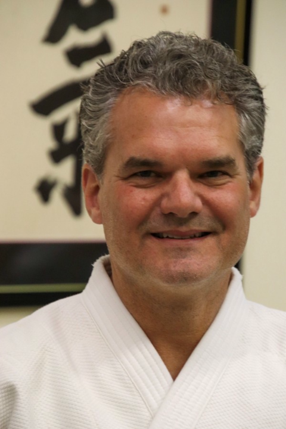
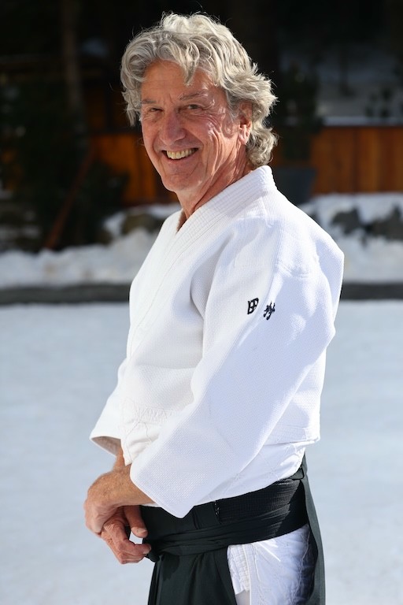
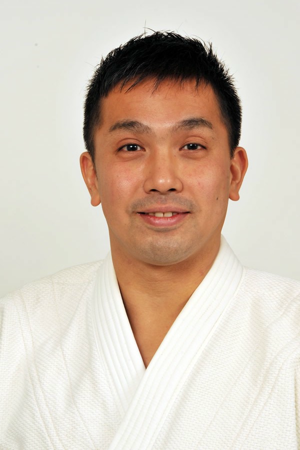
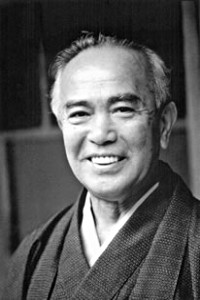

Terry Pierce sensei
Chief Instructor, New Jersey Ki SocietyNanadan (7th degree black belt), Shinshin Toitsu Aikido
Okuden, Shinshin Toitsudo (Ki Development)
Pierce sensei trained in Aikido and was a loyal student of Tohei Sensei for over 60 years, making him the most senior member of the Eastern Ki Federation. He began studying Aikido in 1960 after completing his service in the Army.He later co-founded the N.J. Aikikai in Merchantville, N.J. And in 1968, he became the Chief Instructor of the South Jersey Aikikai on Long Beach Island, N.J.
Pierce sensei founded the N.J. Ki Society in Riverton, N.J. in 1974. In 1983, while studying at Ki no Kenkyukai in Japan, Pierce Sensei was appointed a Leader in the Ki no Genri Jissenkai. Pierce sensei was a Full Lecturer for the International Ki Society and applied over four decades of Ki training as a personal massage therapist, having accumulated over 600 hours of certified training.
Pierce sensei lived the mission of helping people grow and develop. We are all deeply grateful for the influence he had on our development both as individuals and as an organization. He was a consistent presence in every seminar, a dedicated student, and a passionate teacher. Pierce sensei passed away on 7 March 2025 at the age of 88.

Rich Fryling sensei
Chief Instructor, Eastern Ki FederationRokudan (6th degree black belt), Shinshin Toitsu Aikido
Joden, Shinshin Toitsudo (Ki Development)
Fryling sensei is a certified Lecturer and Examiner with Ki no Kenkyukai, Headquarters in Japan. He began training in 1989 at Furman University as a philosophy student of David Shaner sensei, former Chief Instructor of the Eastern Ki Federation. Fryling Sensei was also an instructor at South Carolina Ki Aikido, as well as Head Instructor of New York Ki Aikido.
Fryling sensei applies his over thirty years of mind and body unification training both personally and professionally. He is founder of The Walking Brand, which aims to change people's relationship to stress, as well as Co-Founder of The QCC Group, a vertically integrated cannabis company headquartered in New Jersey.

David Shaner sensei
Senior Adviser, Eastern Ki FederationHachidan (8th degree black belt), Shinshin Toitsu Aikido
Okuden, Shinshin Toitsudo (Ki Development)
Shaner sensei was the first Chief Instructor of the Eastern Ki Federation in the United States, and was an uchi deshi (live-in student) at Ki Society HQ in Haramachi, Shinjuku-ku, Japan. He has been teaching at Furman University since 1982 and holds an endowed chair emeritus as the Herring Professor of Philosophy and Asian Studies, as well as Chair of the Department of Philosophy. In addition to his work at Furman University and the Eastern Ki Federation, Shaner sensei is the Principal of CONNECT, LLC.

Shinichi Tohei sensei
President, Shinshin Toitsu Aikido KaiSince childhood Shinichi Tohei was guided and taught by his father Soshu Koichi Tohei sensei, the 10th dan Aikido master. Currently, as successor, he is engaged in an effort to spread the teachings of Shinshin Toitsu Aikido in Japan and overseas.
He also serves as a liberal arts part time teacher of Keio University and teaches Shinshin Toitsu Aikido at classes and the official Keio University Aikido Club. In addition, he applies the teaching in communication seminars, guiding the development of human resources for business leaders, professional athletes and artists.

Koichi Tohei sensei
Founder of Shinshin Toitsu Aikido (Ki-Aikido)Koichi Tohei sensei was awarded the highest rank (10th degree blackbelt) by Aikido Founder Morihei Ueshiba (O-Sensei) in 1969. After O-Sensei's death, Tohei sensei continued as Chief Instructor of the Aikikai. Through understanding the principles of mind and body unification, Tohei sensei had very clear ideas about the best way of teaching Aikido. These ideas were largely influenced by Nakamura Tempu sensei and Tetsuju Ogura sensei, two formative teachers of our Founder (Soshu) Tohei sensei.
Tohei sensei introduced a system of teaching Ki. In 1971, Tohei sensei founded the Ki no Kenkyukai. Its purpose is to teach the principles of Ki and realization of Bodymind oneness.
Koichi Tohei sensei, the founder of Shinshin Toitsu Aikido (Ki-Aikido), passed away peacefully on 19 May 2011. He was 91 years old.
The Four Basic Principles
- Keep one point
- Relax completely
- Keep weight underside
- Extend Ki
These principles form the foundation of Ki-Aikido practice and are applied both in techniques and in daily life situations.